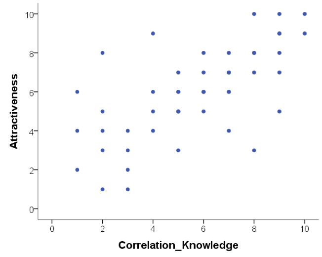
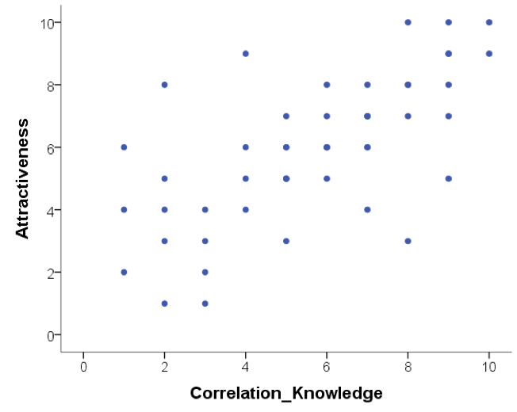
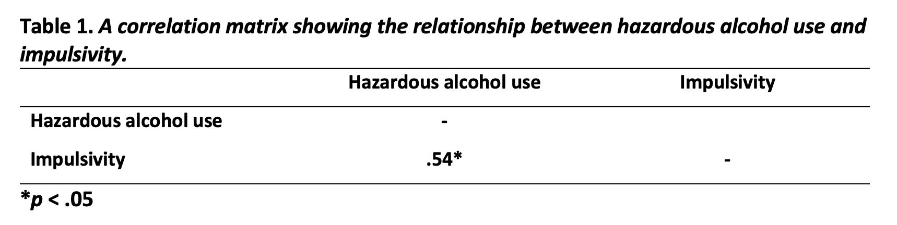

2 Week 11: Correlation
Written by Margriet Groen (partly adapted from materials developed by the PsyTeachR team a the University of Glasgow)
Today we will take a look at correlation as a measure of association between two numerical variables. We will create scatterplots to visualise correlations, we will run a correlation analysis and we will practise interpreting and reporting the results.
2.1 Lectures
The lecture material for this week is presented in two parts:
2.2 Reading
The reading that accompanies the lectures this week and next week is from the free textbook by Miller and Haden.
Chapter 10 gives you a brief overview of what correlation and regression are. Chapter 11 introduces correlation in more detail. Both chapters are really short but provide a good basis to understanding correlational analysis. Please note, in Chapter 10 you might encounter some terminology that is unfamiliar to you. It talks about ANOVA, which means Analysis of Variance and about GLM, which means General Linear Model. Having a quick look at Chapter 1 of Miller and Haden also helps with that.
2.3 Pre-lab activities
After having watched the lectures on correlation and read the textbook chapters you’ll be in a good position to try these activities. Completing them before you attend your lab session will help you to consolidate your learning and help move through the lab activities more smoothly.
2.3.1 Pre-lab activity 1: Visualing correlations
Have a look at this visualisation of correlations by Kristoffer Magnusson.
After having read Miller and Haden Chapter 11, use this visualisation page to visually replicate the scatterplots in Figures 11.3 and 11.4 - use a sample of 100. After that, visually replicate the scatterplots in Figure 11.5.
Each time you change the correlation, pay attention to the shared variance (the overlap between the two variables) and see how this changes with the changing level of relationship between the two variables. The greater the shared variance, the stronger the relationship. Also, try setting the correlation to r = .5 and then moving a single dot to see how one data point, a potential outlier, can change the stated correlation value between two variables.
2.3.2 Pre-lab activity 2: Guess the correlation
Now that you are well versed in interpreting scatterplots (scattergrams) have a go at this online app on guessing the correlation.
This is a very basic app that allows you to see how good you are at recognising different correlation strengths from the scatterplots. We would recommend you click the “Track Performance” tab so you can keep an overview of your overall bias to underestimate or overestimate a correlation.
Is this all just a bit of fun? Well, yes, because stats is actually fun, and no, because it serves a purpose of helping you determine if the correlations you see in your own data are real, and to help you see if correlations in published research match with what you are being told. As you will have seen from the above examples, one data point can lead to a misleading relationship and even what might be considered a medium to strong relationship may actually have only limited relevance in the real world. One only needs to mention Anscombe’s Quartet to be reminded of the importance of visualising your data, which leads us to the final pre-lab activity for this week.
2.3.3 Pre-lab activity 3: Anscombe’s quartet
Anscombe (1973) showed that four sets of bivariate data (X, Y) that have the exact same means, medians, and relationships can look very different when plotted. You can read more about this here.
All in this is a clear example of why you should visualise your data and not to rely on just the numbers.
2.3.4 Pre-lab activity 4: Getting ready for the lab class
2.3.4.1 Remind yourself of the basics of how to work with RStudio.
You might want to re-watch some of the videos John and Tom provided in PSYC121:
2.3.4.2 Create a folder and a Project for Week 11.
Click here for the instructions from Week 6 of PSYC121 if you are unsure.
2.3.4.3 Get your files ready
Download the 122_week11_forStudents.zip file and upload it into the new folder in RStudio Server you created at the previous step. If you need them, here are the instructions from Week 2 of PSYC121.
2.4 Lab activities
In this lab, you’ll gain understanding of and practice with:
- constructing and interpreting scatterplots
- running correlation analysis and interpret the results
- reporting the results in APA format
- constructing a correlation matrix in APA format
- when and why to apply correlation analysis to answers questions in psychological science
2.4.1 Lab activity 1: Interpreting correlation
2.4.1.1 Question 1
Below are scatterplots that show the relationship between ‘how much you know about correlation and how attractive you appear to members of the opposite (&/or same) sex’. Choose the type of correlation (strength and direction) displayed in each graph using one of the following:
- Perfect positive correlation
- Perfect negative correlation
- Strong positive correlation
- Strong negative correlation
- Moderate positive correlation
- Moderate negative correlation
- Null correlation
Figure A
 Figure B
Figure B
 Figure C

Figure D
Figure C

Figure D

2.4.1.2 Question 2
Suppose it was observed that there is a correlation of r = -.81 between a driver’s age and the cost of car insurance. This correlation would mean that, in general, older people pay more for car insurance.
TRUE or FALSE? Explain why.
Note: explain your chosen answer based on the statistic given, not on why you think the correlation may or may note make ‘logical’ sense).
2.4.1.3 Question 3
Suppose that there is a correlation of r = .87 between the length of time a person is in prison and the amount of aggression the person displays on a psychological inventory administered at release. This means that spending a longer amount of time in prison causes people to become more aggressive.
TRUE or FALSE? Explain why.
2.4.1.4 Question 4
A significant correlation was found between having great hair and performance in correlation labs. The correlation coefficient was .7. How much variance in correlation lab performance can the ‘greatness’ of your hair explain?
- 51%
- 70%
- 49%
- 30%
- Who cares I’ve got great hair.
What was the reason for your answer?
What is this ‘new coefficient’ called?
2.4.2 Lab activity 2: Visualising, calculating and reporting correlations
Going back to the data discussed in Chapter 11 of Miller & Haden, you’ll remember it contains data from 25 8-year-old children on:
- a standardised test of reading ability (Abil)
- intelligence (IQ)
- the number of minutes per week spent reading in the home (Home)
- and the number of minutes per week spent watching TV (TV)
In the video on ‘How to conduct correlation analysis using R’ we looked at the correlation between reading ability and intelligence. Now, let’s look at the correlation between number of minutes per week spent reading in the home and watching TV.
The folder you were asked to download under ‘Pre-lab activity 4: Getting ready for the lab class’ contains the datafile (“MillerHadenData.csv”) as well as the R-script from the ‘How to …’ video (122_wk11_howtoExample.R) that you can use here and adapt.
Load the ‘broom’ and the ‘tidyverse’ libraries by running the first two lines of code.
Read in the data. You should now see an object with 25 observations and 5 variables in the ‘Environment’. Click on it to view it.
Construct a scatterplot of the relationship between ‘Home’ and ‘TV’.
What can you tell from the scatterplot about the direction of the relationship?
Conduct the correlation analysis.
What is the correlation coefficient (Pearson’s r)?
What is the p value?
Is the correlation significant at the p < .05 level?
What are the degrees of freedom you need to report?
How much variance in ‘time spent reading’ can be accounted for by ‘time spent watching TV’? (Hint: you can use the Console in RStudio as a calculator.)
Write a few sentences in which you report this result, following APA guidelines.
2.4.3 Lab activity 3: More correlations
Researchers were interested in the relationship between hazardous alcohol use and impulsivity (making unplanned, rapid decisions without thinking or ‘acting on a whim’). To investigate the relationship, 20 participants completed both the alcohol use disorder identification test (AUDIT; Saunders, Aasland, Babor, de la Fuente, & Grant, 1993) and the Barratt’s Impulsiveness Scale (BIS-11) (Patton, Stanford, & Barratt, 1995). The datafile (“alcoholUse_Impulsivity.csv”) is in the folder you were asked to download under ‘Pre-lab activity 4: Getting ready for the lab class’. Again, the R-script from the ‘How to …’ video (122_wk11_howtoExample.R) is useful here.
Load the ‘broom’ and the ‘tidyverse’ libraries by running the first two lines of code.
Read in the data. You should now see an object containing the data in the ‘Environment’. How many variables does it have?
Construct a scatterplot of the relationship between ‘Hazardous Alcohol Use’ and ‘Impulsivity’.
What can you tell from the scatterplot about the direction of the relationship?
Conduct the correlation analysis.
What is the correlation coefficient (Pearson’s r)?
What is the p value?
Is the correlation significant at the p < .05 level?
What are the degrees of freedom you need to report?
How much variance in ‘impulsivity’ can be accounted for by ‘hazardous alcohol use’? (Hint: you can use the Console in RStudio as a calculator.)
Construct a correlation matrix to display the correlation coefficient in a table.
Give three logically possible directions of causality, indicating for each direction whether it is a plausible explanation in light of the variables involved (and why). No, this is not a trick question -—I know that correlation does not infer causation, but think critically! New studies/ideas are constructed by thinking what the previous study doesn’t tell us about what could be happening with the variables of interest.
Job completed — Well done!
2.5 Answers
When you have completed all of the lab content, you may want to check your answers with our completed version of the script for this week. Remember, looking at this script (studying/revising it) does not replace the process of working through the lab activities, trying them out for yourself, getting stuck, asking questions, finding solutions, adding your own comments, etc. Actively engaging with the material is the way to learn these analysis skills, not by looking at someone else’s completed code…
2.5.1 Lab activity 1: Interpreting correlation
- Scatterplots
- strong positive correlation
- null correlation
- moderate positive correlation
- perfect negative correlation
FALSE Explanation: The correlation coefficient is negative and therefore infers a negative correlation. As such, older people pay less for car insurance: as age increases, car insurance costs decrease.
FALSE Explanation: This is a bit of trick question as it has the sneaky ‘cause’ word in. The correlation coefficient is a positive number, suggesting a positive relationship between length of time in prison and aggression. However, causation cannot be inferred from correlation and therefore we cannot know whether time spent in prison CAUSES aggression, and rather we suggest a relationship between the two that as length of time in prison increases, aggression increases.
c 49% The ‘coefficient of determination’ or ‘R-squared’ tells us the proportion or variance in one variable that can be predicted if we know the other variable. We can determine this by squaring the r. Therefore, .72 = .49, R2 = .49.
2.5.2 Lab activity 2: Constructing scatterplots and calculating correlations
You can download the R-script that contains the code to complete lab activities 2 and 3 here: 122_wk11_labActivities2_3.R
See R script
See R script
See R script
What can you tell from the scatterplot about the direction of the relationship? There is a negative association between ‘Home’ and ‘TV’. This means that the longer a child spends watching TV, the shorter they will read at home.
Conduct the correlation analysis. See R script
What is the correlation coefficient (Pearson’s r)? r = -.65
What is the p value? p < .001
Is the correlation significant at the p < .05 level? Yes, because the p-value is smaller than .005
What are the degrees of freedom you need to report? 23
How much variance in ‘time spent reading’ can be accounted for by ‘time spent watching TV’? 42%
Write a few sentences in which you report this result, following APA guidelines. Something along the lines of: A Pearson’s correlation coefficient was used to assess the relationship between time spent reading at home and time spent watching TV at home. There was a significant negative correlation, r(23) = -.65, p < .001. As time spent watching TV at home increased, time spent reading at home decreased.
2.5.3 Lab activity 3: Hazardous alcohol use and impulsivity
- See R script
- How many variables does it have? 3
- See R script
- What can you tell from the scatterplot about the direction of the relationship? There is a positive association between ‘hazardous alcohol use’ and ‘impulsivity’. This means that as a participant’s score on ‘hazardous alcohol use’ goes up, their score on ‘impulsivity’ also goes up.
- See R script
- What is the correlation coefficient (Pearson’s r)? r = .54
- What is the p value? p = .014
- Is the correlation significant at the p < .05 level? Yes
- What are the degrees of freedom you need to report? 18
- How much variance in ‘impulsivity’ can be accounted for by ‘hazardous alcohol use’? (Hint: you can use the Console in RStudio as a calculator.) 29%
- Construct a correlation matrix to display the correlation coefficient in a table.
 12. Give three logically possible directions of causality, indicating for each direction whether it is a plausible explanation in light of the variables involved (and why). No, this is not a trick question -—I know that correlation does not infer causation, but think critically! New studies/ideas are constructed by thinking what the previous study doesn’t tell us about what could be happening with the variables of interest.
Just really looking for reasoning here.
Examples:
- Being more impulsive may make people consume more alcohol.
- Consuming more alcohol may make people more impulsive.
- An outgoing personality might influence both your level of impulsivity and you are more likely to be socialising in the pub and consuming alcohol. So the same ‘third factor’ may influence both our variables of interest.